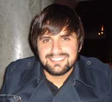

Palestrantes
-

Almir Filho
Desenvolvedor Web na Globo.com e co-fundador do Loop Infinito, onde compartilha seu conhecimento, experiências e pensamentos sobre front-end.
-
Felipe Nascimento
Entusiasta JavaScript, apaixonado por desenvolvimento Web e linguagens de programação, atua como Analista de Desenvolvimento Sênior no Terra. Organizador e co-fundador da BrazilJS Conference e BrazilJS Foundation, além do RSJS.
-

Gabriel Zigolis
Arquiteto Front-End na Arezzo, core-committer no PopcornTime, um dos criadores do projeto Open Source blogMV*, autor na Front-End Magazine e um dos organizadores do Floripa Devs Meetup.
-
Pedro Nauck
Desenvolvedor Web desde os 12 anos de idade, já se aventurou por diversas áreas dentro do desenvolvimento web. Ao longo dos últimos anos se dedica exclusivamente à estudar Javascript e suas peculiaridades. Fundador e Programador na GoNorth, um dos co-founders do @CerebroBR :)
-

Filipi Zimermann
Com 12 anos de experência com desenvolvimento para web, atualmente é Front-end Engineer e co-fundador da Nextt. Empreendedor, SCJP, SCWCD, é graduado em Sistemas de Informação pela UFSC.
-
João Marcelo
Microsoft Certified Professional C# com foco em arquitetura de aplicações web utilizando AngularJs com tecnologias ASP.Net, Python e MongoDB.
-
Renato Vasconcellos
Publicitário e técnico em Informática da Taller. Drupaleiro de carterinha, vegetariano e anarquista que adora Software Livre.
-
Guilherme Oderdenge
É desenvolvedor web focado em front-end: desde o desenho da interface até o JavaScript. Suas principais habilidades são o Photoshop e o Backbone.js, usando Jasmine para testes e, quando necessário, Node e Rails para o back-end. Trabalha profissionalmente na área há aproximadamente 6 anos.
-
André Júnior
Full Stack Developer na Resultados Digitais, desenhista, open source lover.